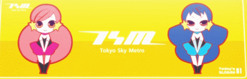
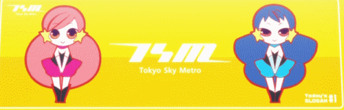

I Love Japan
About Japan, and a Little About Me
m
There are many things I love on this earth, and while mostly all of it is money because it allowes me to experience most things, I mostly love anime. Anime, the fruit of my tounge and the spectre of my love. I love you, anime, and you make my world the roundest possible. I wish anime was more cute but there is little I can actually do for my love of animes.
While Ben 10: Alien Adventure is not an anime, it is still very kawaii. I expect a lot of porn of this series to show up soon on Gelbooru if it is not there already. Please support the anime! Buy haruhi DVDs!
m
Barack Obama's Presidential List of Personal Favorite Anime Titles
m
- Puella Magi Madoka Magica
- Genshiken
- Ghost in the Shell
- Yuri Yuri!!
- Hidamari Sketch
- Favorite Characters Include. . .
- Hiro
- Yuno
- Sae
- Bakemonogatari

"if I were president, which I am, I would make every American school show Bakemonogatari in their classrooms. They can't get any stupier, right?"
m
Henry Kissinger's Review on Bakemonogatari
m
"I love Bakemonogatari. It is the truest sense of power. I have once said that, and I quote myself thank you, 'power is the ultimate aphrodisiac.' What makes Bakemonogatari so great, so preferable to watch, is the fanservice. I love femdom. Senjougahara deploys the ultimate attractiveness with her unforgiving use of power, and has become the icon for my ultimate sexual fantasy. I love Senjougahara, and I wish she were real. . ."
 

Aschkolonne is NOT the author of this website. Any criminal or libel action seen on this webpage is not his responsiblity to seek awareness of or moderate.